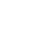

Portfolio Web site
소통하고 협력하는 디자이너를 ‘우주를 항해하는 우주선’에 비유하여
우주 컨셉의 포트폴리오를 제작했습니다.
Tool

- 


Arcterycx web site
등산 브랜드 아크테릭스의 광활함과 고급스러운
분위기를
반영하여, 웹사이트를 반응형 디자인으로
새롭게 제작했습니다.
Tool

Wonka
micro Web site
영화 "웡카"의 신비롭고 환상적인 분위기를 강조하여
마이크로사이트를 디자인하였습니다.
Tool

Greensweet app
라이프 스타일에 맞는 식물 추천, 맞춤형 식물 관리,
식물 정보 제공 등의 기능을 갖춘 식물 애호가들을 위한
맞춤형 어플리케이션 '그린스윗'을 제작하였습니다
Tool

CHLOE DAY CAFE
프랑스식 베이커리 카페인 'Chloe Day'를
프랑스 극기에서 영감을 받아
친근하고 매력적인 느낌으로 브랜딩 디자인했습니다.
Tool
BRAIN DEAD
의류 브랜드 Brain Dead의 개성을 충실히 반영하여
반항적인 정신과 문화적 다양성을 표현했습니다
Tool

Maybe from
2024 한밭대학교 대동제 'Maybe From'의 프로모션 디자인을 진행했습니다.
여름밤의 환상적인 축제 분위기를 반영하였고,
축제의 열기와 즐거움을 표현했습니다
Tool